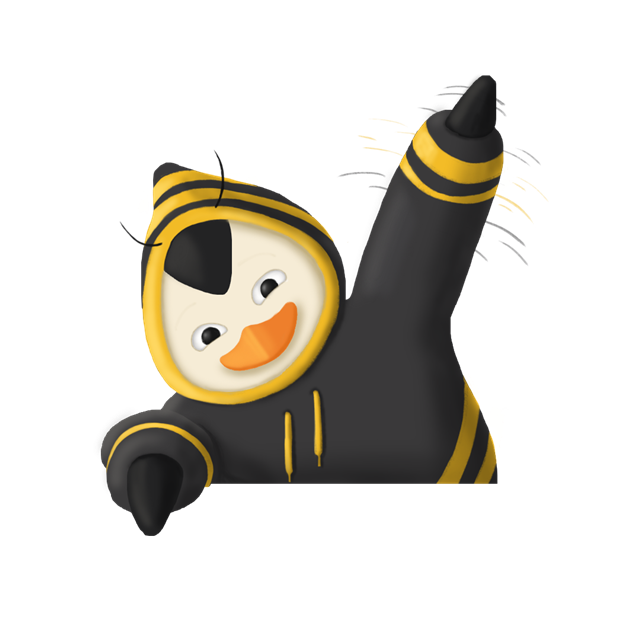

Software livre feito em colmeia.
Somos o grupo de extensão Socialização em Software Livre e Hardware Livre da UDESC. Desde 2002 levamos tecnologia aberta para escolas, universidades e comunidade.

Mais de 20 anos espalhando conhecimento livre
O Colmeia nasceu no final de 2002, por iniciativa dos professores Kariston Pereira e Claudio César de Sá. Hoje é coordenado pelos professores Gilmário Barbosa dos Santos e Rafael Kingeski, no Centro de Ciências Tecnológicas (CCT) da UDESC, em Joinville.
Aulas e minicursos
Ministramos cursos de programação e ferramentas livres em escolas e universidades, como o Projeto Resgate de Python.
Caravanas e eventos
Organizamos caravanas para eventos como a Latinoware e realizamos o FLISoL, o Festival Latino-americano de Instalação de Software Livre.
Comunidade Linux
Nosso primeiro projeto foi a “Comunidade de Excelência Linux na UDESC”. A Colmeia Linux é a continuação natural dessa história.
Conteúdo aberto
Produzimos vídeos e materiais no YouTube para quem quer aprender programação usando só ferramentas livres.
O que estamos fazendo
Da distro aos minicursos em vídeo: tudo é livre e pode ser reaproveitado.
Colmeia Linux
Distribuição Linux baseada em Debian, customizada pelo grupo para ensino e uso no dia a dia.
Ver projeto →Introdução a Python
Minicurso que cria a base para quem quer aprender a linguagem de alto nível Python.
Introdução a C
Minicurso introdutório à linguagem C, formando a base para quem quer se aprofundar.
Um Hello World em Cada Linguagem
Série que apresenta história, características e usos de cada linguagem, configurando o ambiente com ferramentas livres.
Projeto Resgate
Aulas de Python para estudantes, com projetos finais como Quiz, Calculadora de IMC e Pedra-Papel-Tesoura.
FLISoL
Festival Latino-americano de Instalação de Software Livre. Traga seu computador e saia com Linux instalado.
Nossa própria distro Linux
Uma distribuição baseada em Debian, pensada para laboratórios, escolas e para quem está começando no mundo Linux. 100% open source, construída pelos alunos e aberta a contribuições.
- Base Debian estável, segura e com milhares de pacotes
- Ferramentas de ensino e programação já instaladas
- Imagem ISO live: teste sem instalar
- Código e scripts de build públicos no GitHub
# clone e gere a ISO você mesmo $ git clone https://github.com/colmeiaUDESC/colmeia-linux $ cd colmeia-linux $ sudo lb build # teste numa máquina virtual $ qemu-system-x86_64 -enable-kvm -m 4G \ -cdrom colmeia-linux-amd64.hybrid.iso ⬢ Bem-vindo à Colmeia Linux!
As abelhas da colmeia
Coordenação: Prof. Gilmário Barbosa dos Santos e Prof. Rafael Kingeski. Para participar não é obrigatório cursar Ciência da Computação!
- Coordenação
- Bolsistas
- Voluntários
Quer entrar na colmeia?
Chama a gente para uma palestra, minicurso, FLISoL ou venha contribuir com a Colmeia Linux.